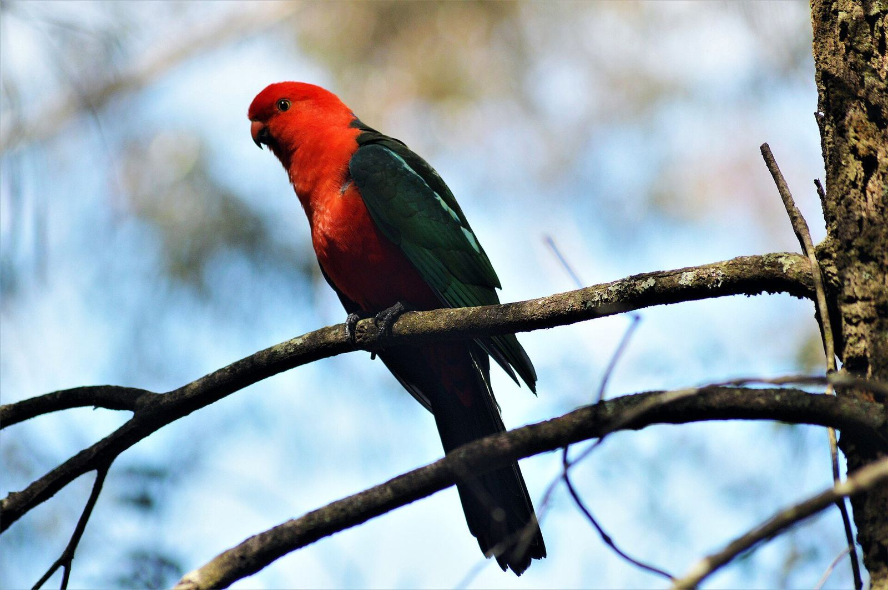
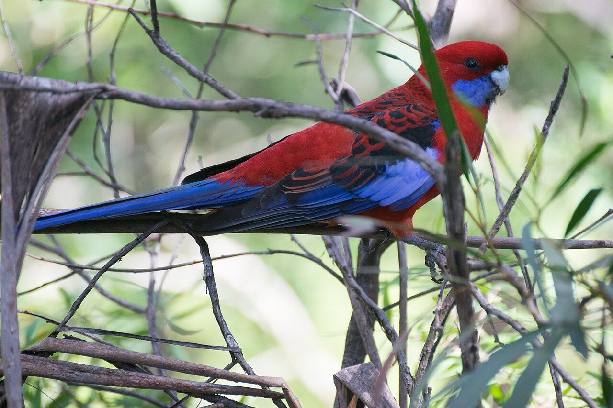
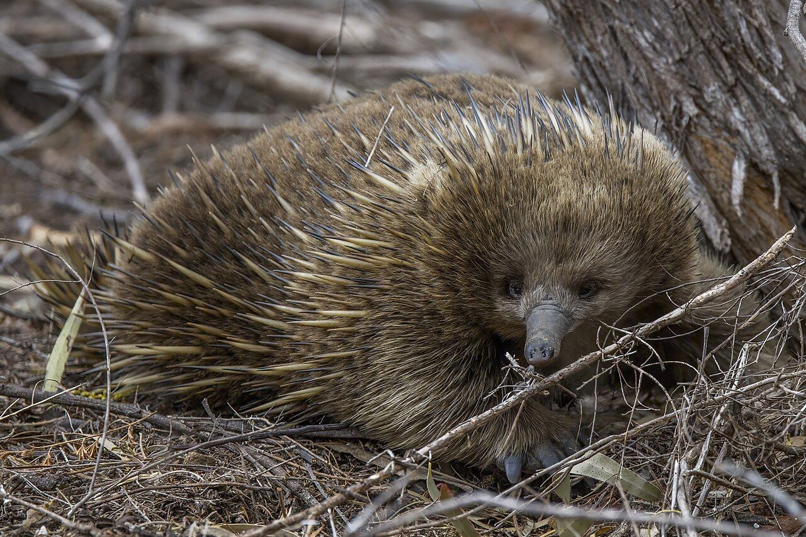
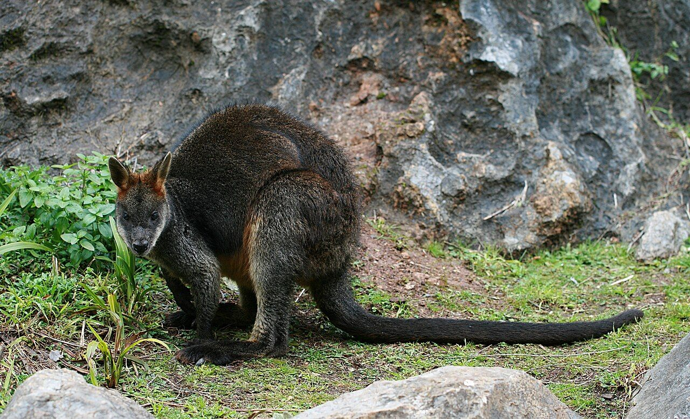
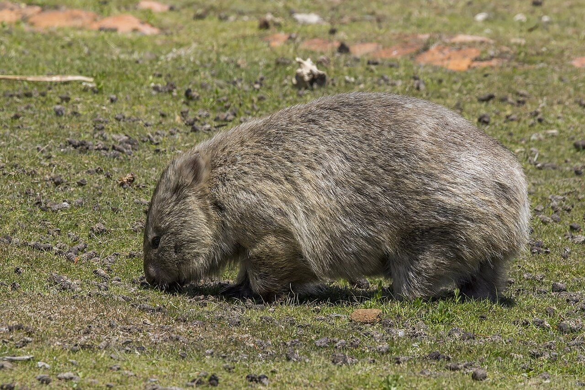
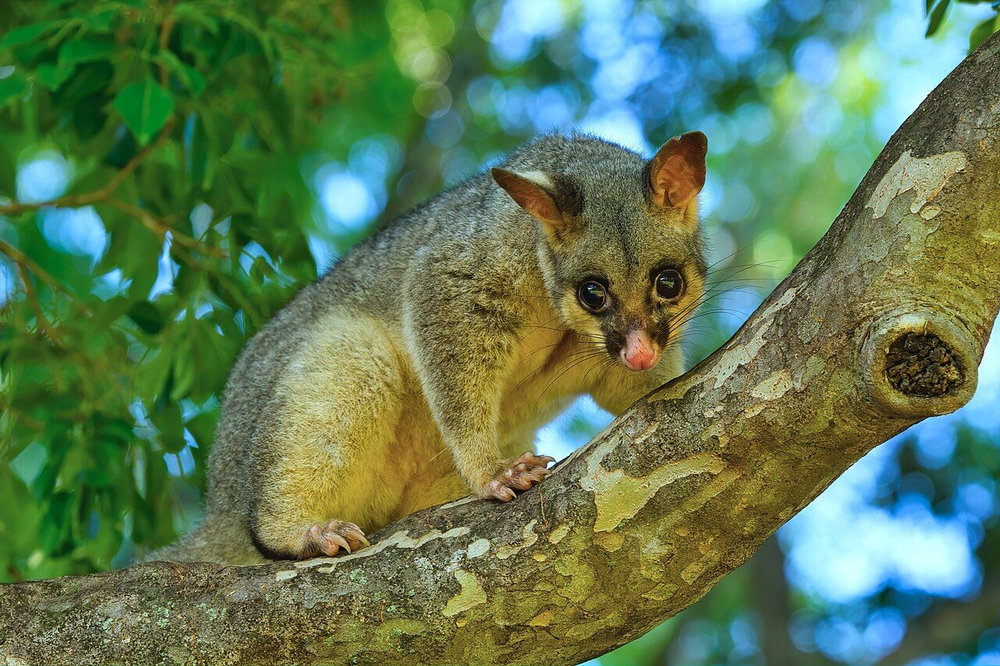
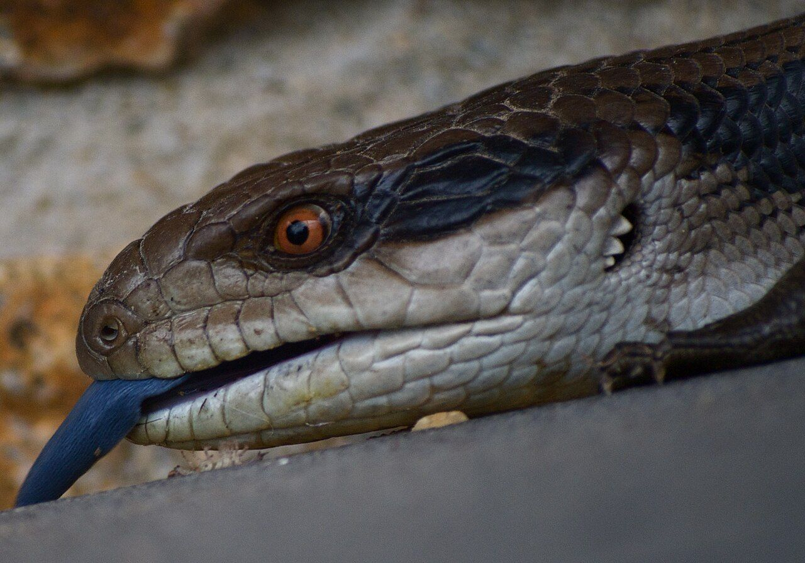

We share the gardens and the river bank with a lot of locals. Most mornings start with parrots at the window, and some evenings end with a platypus in the river.
Who you might meet
- King parrots and rosellas, bright red and green, feeding in the garden most mornings. The male king parrot has the all-red head; the female is mostly green.
- Platypus, sometimes seen gliding past the bank in the quiet light of early morning or evening.
- Mountain wallabies, out on the lawns at dawn.
- Echidnas, trundling through the garden beds on warm days, nose down, looking for ants.
- Possums, in the trees after dark.
- Wombats, mostly heard and seen at night.
- Blue-tongue lizards, sunning themselves on warm paths in summer.



Spotting a platypus
Platypus are small, shy and easy to miss. They're most active early in the morning and late in the evening, though you'll sometimes see one in the middle of the day. Find a spot on the bank where the water is calm, sit very still and watch for a small, low ripple moving against the current, or a little ring of bubbles where one has dived.
Platypus have good hearing and sharp eyes, so keep quiet and move slowly. Don't be fooled by the rakali, our native water-rat, which also swims in the river. It has a long tail with a white tip, which a platypus doesn't.


Keeping them wild
Everything here is wild, and we'd like it to stay that way. Please don't feed the animals or birds, give them space, and keep dogs on a lead so the wallabies and echidnas aren't frightened off.
If you find an injured animal, on the property or on the road, ring Wildlife Victoria's 24-hour line on (03) 8400 7300, and let us know. Wildlife keeps its own hours, so we can't promise a sighting. Ask us when you arrive: we'll tell you where the platypus was last seen.


Useful links
- Australian Platypus Conservancy: spotting hints
- The Platy Project, to record a platypus sighting, or a morning without one
- Wildlife Victoria: report a wildlife emergency
Top photo: Charles J. Sharp, CC BY-SA 4.0, via Wikimedia Commons.


_Freycinet.jpg){kind=link}

_Maria_Island_2.jpg){kind=link}


_Scottsdale.jpg){kind=link}